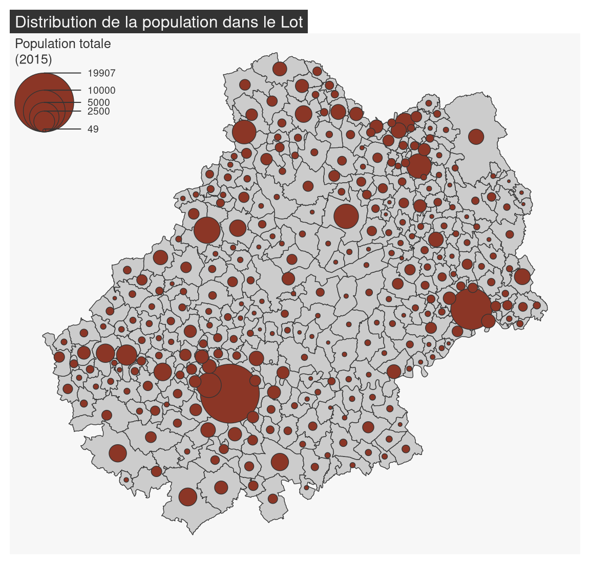
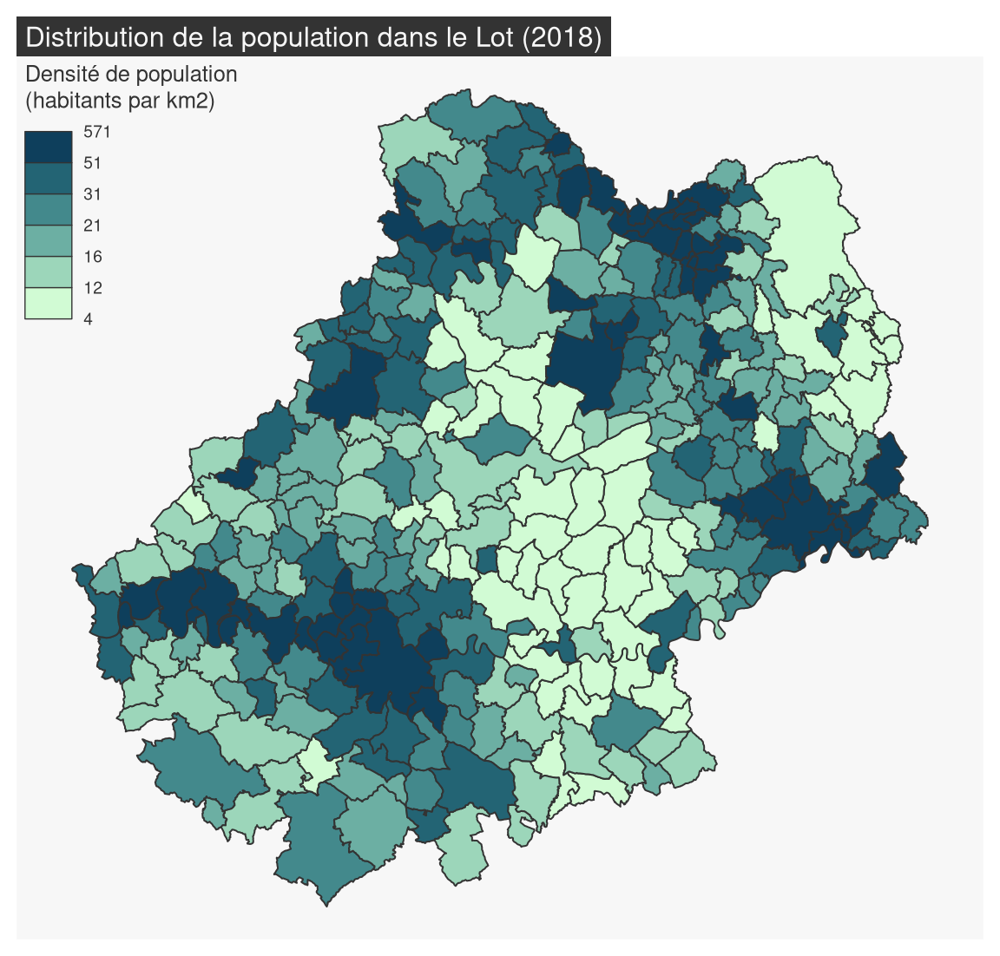
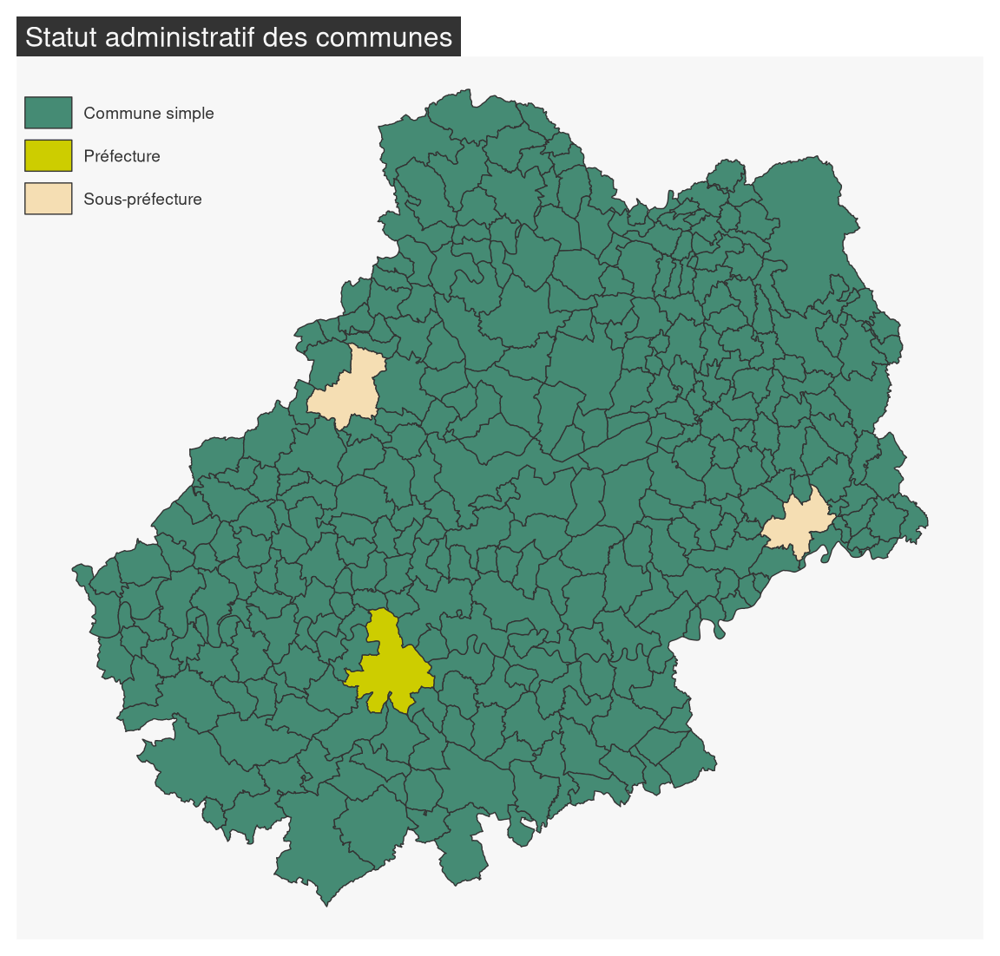
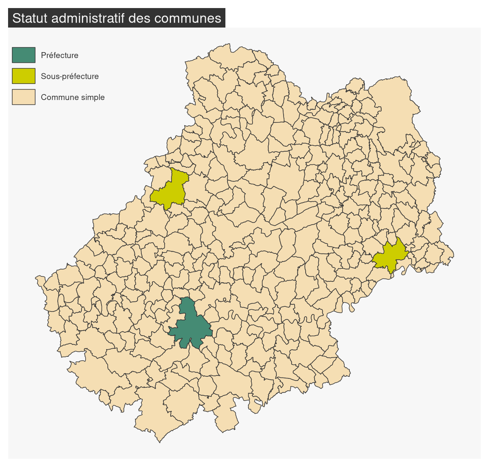
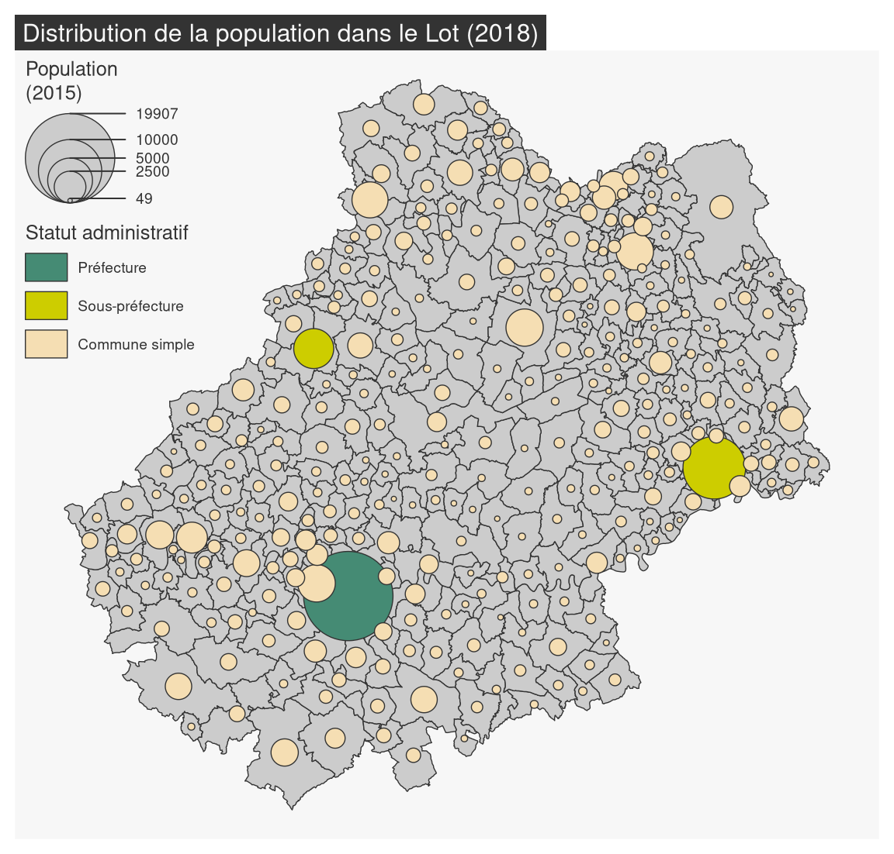

La fonction mf_map() est la fonction centrale du package mapsf. Elle permet de réaliser la plupart des représentations usuelles en cartographie. Ces arguments principaux sont :
x, un objet sf ;
var, le nom de la variable à représenter ;
type, le type de représentation.
3.1 Les données d’exemple
Les lignes suivantes importent les couches d’information spatiales situées dans le fichier geopackagelot.gpkg.
library(sf)
#> Linking to GEOS 3.11.1, GDAL 3.6.2, PROJ 9.1.1; sf_use_s2() is TRUE
# import des communes du Lotcom <-st_read("data/lot.gpkg", layer ="communes", quiet =TRUE)# import des départements françaisdep <-st_read("data/lot.gpkg", layer ="departements", quiet =TRUE)# import des restaurantsresto <-st_read("data/lot.gpkg", layer ="restaurants", quiet =TRUE)# import des routes autour de la commune de Gramatroute <-st_read("data/lot.gpkg", layer ="routes", quiet =TRUE)
3.2 Afficher un fond de carte
Utilisée sans précision de type, la fonction mf_map() affiche simplement les couches spatiales.
library(mapsf)# Communes (polygones)mf_map(x = com, border ="white")# Départements (polygones, fond transparent)mf_map(x = dep, lwd =2, col =NA, add =TRUE)# Routes (polylignes)mf_map(x = route, lwd = .7, col ="ivory4", add =TRUE)# Restaurants (points)mf_map(x = resto, pch =20, cex = .7, col ="darkred", add =TRUE)# Ajour d'un titremf_title(txt ="Le Lot (46)")
3.3 Carte de symboles proportionnels
Les cartes de symboles proportionnels sont utilisées pour représenter les variables de stocks (variables quantitatives absolues, la somme et la moyenne ont un sens). La fonction mf_map(..., type = "prop") propose cette représentation.
# Communesmf_map(x = com)# Symboles proportionnelsmf_map(x = com, var ="POPULATION",type ="prop",leg_title ="Population totale\n(2015)")# Titremf_title("Distribution de la population dans le Lot")

3.4 Carte choroplèthe
Les cartes choroplèthes sont utilisées pour représenter les variables de ratios (variables quantitatives relatives, la moyenne a un sens, la somme n’a pas de sens).
La fonction mf_map(..., type = "choro") permet de créer des cartes choroplètes. Les arguments nbreaks et breaks servent à paramétrer les discrétisations.
# Densité de population (hab./km2) en utilisant la fonction sf::st_area()com$DENS <-1e6* com$POPULATION /as.numeric(st_area(com))mf_map(x = com,var ="DENS",type ="choro",breaks ="quantile",nbreaks =6,pal ="Dark Mint",lwd =1,leg_title ="Densité de population\n(habitants par km2)", leg_val_rnd =0)mf_title("Distribution de la population dans le Lot (2018)")

3.4.1 Les palettes de couleurs
L’argument pal de mf_map() est dédié au choix d’une palette de couleur. pal peut être le nom d’une palette de couleur fournie par R ou alors un vecteur de couleurs définies par leurs codes hexadécimaux.
mf_map(x = com, var ="DENS", type ="choro",breaks ="quantile", nbreaks =4, pal ="Peach")mf_title("Palette définie par son nom")ma_palette <-c("#F3CAD2", "#E08BB1", "#AF4F91", "#6D1C68")mf_map(x = com, var ="DENS", type ="choro",breaks ="quantile", nbreaks =4, pal = ma_palette)mf_title("Palette définie par un vecteur de couleurs")
Les palettes de R
Les fonctions hcl.colors() et mf_get_pal() permettent de construire des palettes de couleurs. mf_get_pal() est surtout utile pour créer des palettes divergentes asymétriques équilibrées.
pal_equilibre <-mf_get_pal(n =c(6,3), palette =c("Burg", "Teal"))pal_non_equi <-c(hcl.colors(6, "Burg"), hcl.colors(3,"Teal", rev =TRUE))library(maplegend)opar <-par(mar =c(0,0,0,0))plot.new()plot.window(xlim =c(0, 1), ylim =c(0, 1), asp =1)leg(type ="choro", val =rep("", 10), pal = pal_equilibre, pos ="topleft", title ="Palette équilibrée")leg(type ="choro", val =rep("", 10), pal = pal_non_equi, pos ="top", title ="Palette non équilibrée")par(opar)
3.4.2 Discrétisations
Avant de réaliser une carte choroplèthe on doit d’abord étudier la distribution statistique de la variable que l’on souhaite cartographier. La fonction mf_distr() permet de visualiser les distributions.
mf_distr(com$DENS)
Cette distribution est très dissymétrique à gauche.
La fonction mf_get_breaks() met à disposition les méthodes de discrétisations de variables classique : quantiles, moyenne/écart-type, amplitudes égales, moyennes emboîtées, Fisher-Jenks, géométrique…
Ici, l’utilisation de la méthode “geom” est assez appropriée.
mf_map(x = com, var ="DENS", type ="choro",breaks = bks, pal ="Blues",lwd =1,leg_title ="Population density\n(inh. per km2)", leg_val_rnd =0)mf_title("Distribution de la population dans le Lot (2018)")
3.5 Carte de typologie
Les cartes de typologies sont utilisées pour représenter les variables qualitatives.
La fonction mf_map(..., type = "typo") propose cette représentation.
mf_map(x = com,var="STATUT",type ="typo",pal =c("aquamarine4", "yellow3","wheat"),lwd = .7,leg_title ="")mf_title("Statut administratif des communes")

L’argument val_order sert à ordonner les modalités dans la légende.
mf_map(x = com,var="STATUT",type ="typo",pal =c("aquamarine4", "yellow3","wheat"),val_order =c("Préfecture", "Sous-préfecture", "Commune simple"),lwd = .7,leg_title ="")mf_title("Statut administratif des communes")

3.6 Carte de stocks et de ratios
La fonction mf_map(..., var = c("var1", "var2"), type = "prop_choro") représente des symboles proportionnels dont les surfaces sont proportionnelles aux valeurs d’une variable et dont la couleur repose sur la discrétisation d’une seconde variable. La fonction utilise les arguments des fonctions mf_map(..., type = "prop") et mf_map(..., type = "choro").
mf_map(x = com)mf_map(x = com,var =c("POPULATION", "DENS"),type ="prop_choro",border ="grey50",lwd =1,leg_title =c("Population", "Densité\nde population\n(en hab./km2)"),breaks ="q6",pal ="Magenta",leg_val_rnd =c(0,1))mf_title("Distribution de la population dans le Lot (2018)")
3.7 Carte de stocks et de catégories
La fonction mf_map(..., var = c("var1", "var2"), type = "prop_typo") représente des symboles proportionnels dont les surfaces sont proportionnelles aux valeurs d’une variable et dont la couleur représente les modalités d’une variable qualitative. La fonction utilise les arguments des fonctions mf_map(..., type = "prop") et mf_map(..., type = "typo").
mf_map(x = com)mf_map(x = com,var =c("POPULATION", "STATUT"),type ="prop_typo",pal =c("aquamarine4", "yellow3","wheat"),val_order =c("Préfecture", "Sous-préfecture", "Commune simple"),leg_pos ="topleft",leg_title =c("Population\n(2015)","Statut administratif"),)mf_title("Distribution de la population dans le Lot (2018)")

Exercice
Importer la couche des communes du département du Lot à partir du fichier geopackage lot.gpkg.
Importer le fichier com.csv.
Ce jeu de données porte sur les communes du Lot et contient plusieurs variables supplémentaires:
le nombre d’actifs (ACT).
le nombre d’actifs dans l’industrie (IND)
la part des actifs dans la population totale (SACT)
la part des actifs dans l’industrie dans le total des actifs (SACT_IND)
Joindre le jeu de données et la couche des communes.
Créer une carte de la population active.
Quel mode de représentation utiliser? Quels choix cela implique-t-il?
Créer une carte de la part de la population active dans la population totale.
Quel mode de représentation utiliser? Quels choix cela implique-t-il?
Vous pouvez utiliser le fichier exo_cartographie_simple.R pour vous guider dans cette exercice.